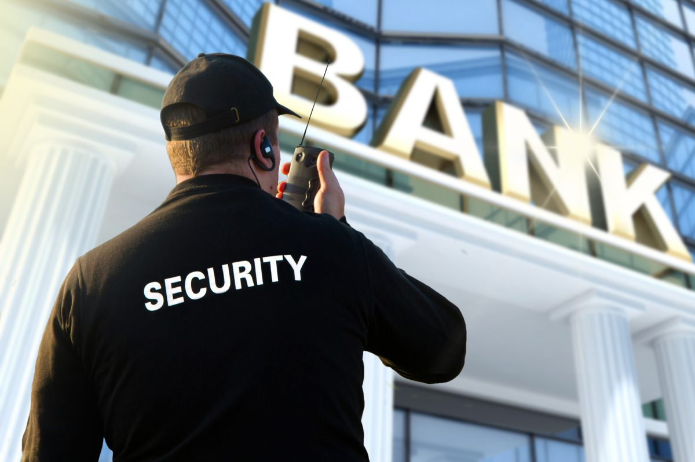

Bank Security: Protecting Your Financial Assets
In today's digital age, maintaining strong bank security measures is paramount to protect your financial assets. With the increasing sophistication of cybercriminals, it is essential to stay vigilant and follow best practices to ensure the safety of your banking information.
One of the fundamental steps in bank security is choosing a strong and unique password for your online banking accounts. Avoid using common passwords or personal information that can be easily guessed. Instead, create a password that includes a combination of uppercase and lowercase letters, numbers, and special characters.
Another crucial aspect is enabling two-factor authentication (2FA) whenever available. 2FA adds an extra layer of security by requiring a second form of verification, such as a code sent to your mobile device, in addition to your password.
Additionally, be cautious of phishing attempts. Cybercriminals often use deceptive emails, text messages, or phone calls to trick individuals into revealing their sensitive banking information. Be skeptical of unsolicited communication and avoid clicking on suspicious links or providing personal details unless you have verified the legitimacy of the source.
Regularly monitoring your bank accounts and reviewing your financial transactions is also essential. Report any unauthorized or suspicious activity to your bank immediately.
By following these bank security practices and staying informed about the latest threats and security measures, you can significantly reduce the risk of falling victim to financial fraud and protect your hard-earned money.